La estructura de la empresa desde el primer paso que se da va encaminado a ofrecer un servicio integral teniendo como una parte fundamental la fabricación, para ello contamos con todas las herramientas administrativas y maquinaria necesaria para ofrecer por una parte el servicio de fabricación de las piezas diseñadas y por otra la fabricación de piezas bajo plano externo.
Galería
Nuestros trabajos
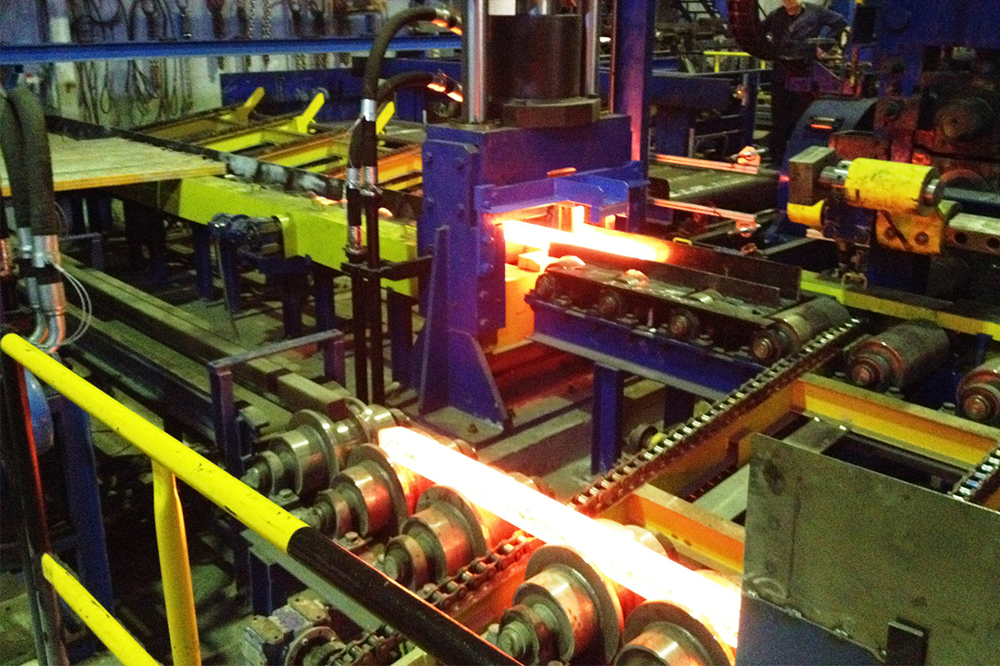
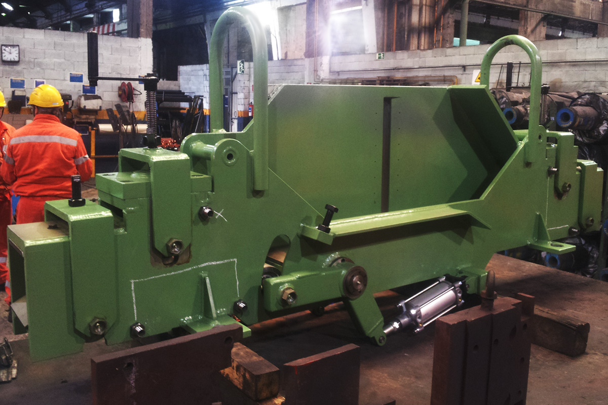
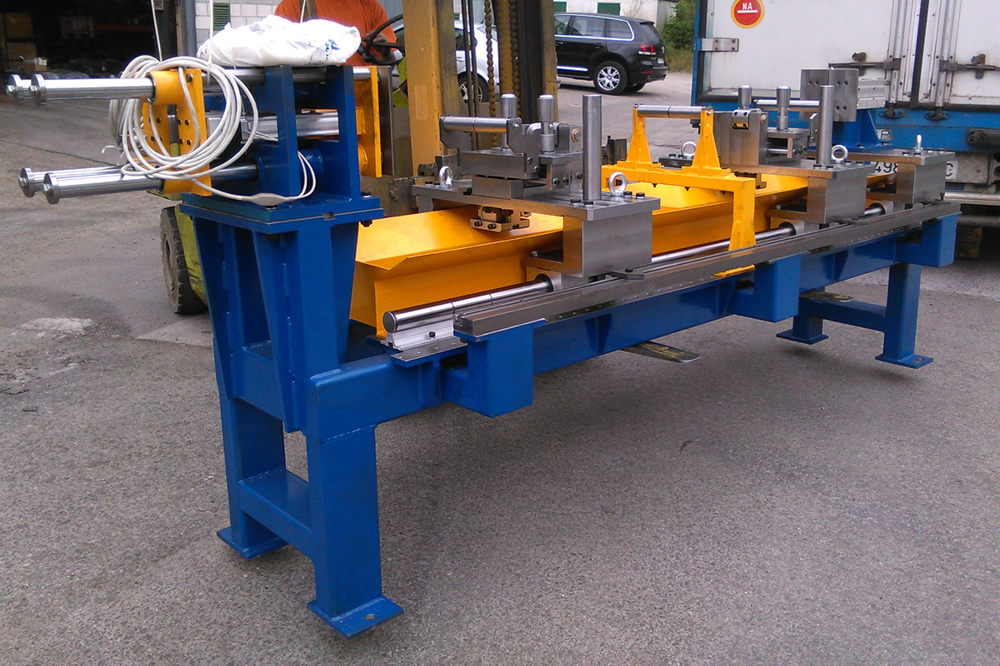
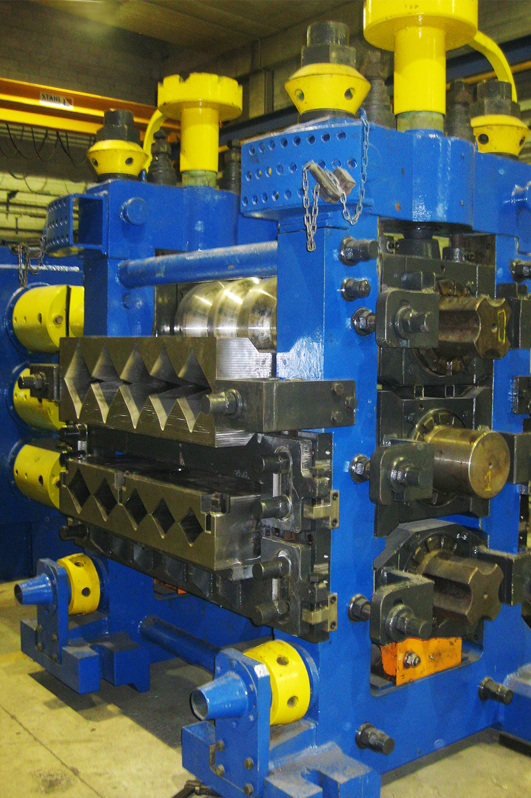
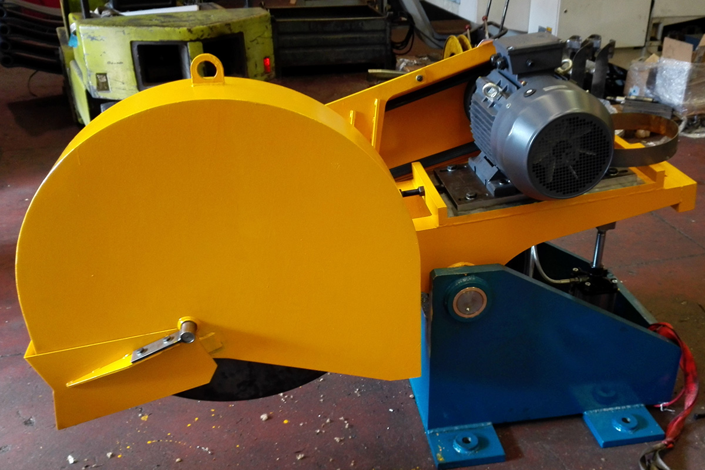
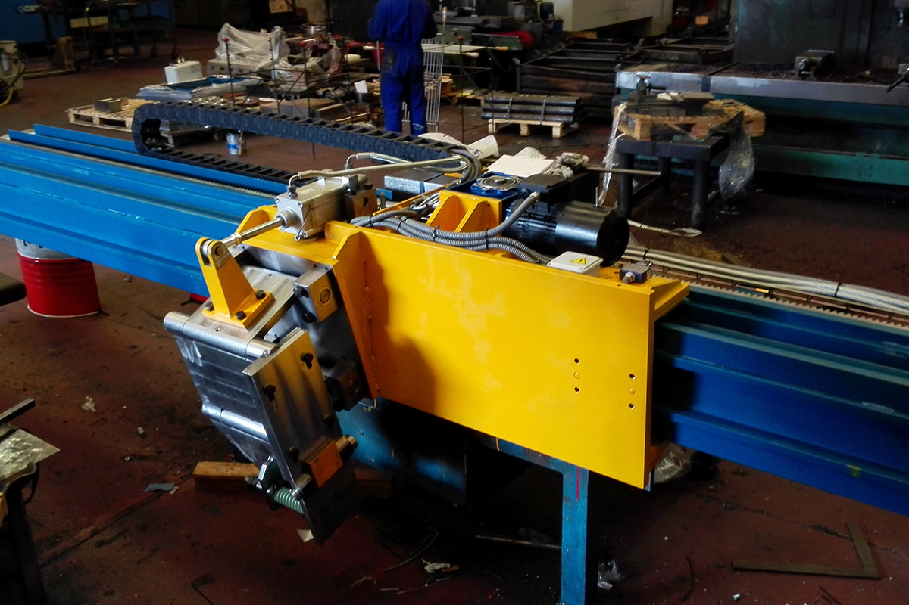
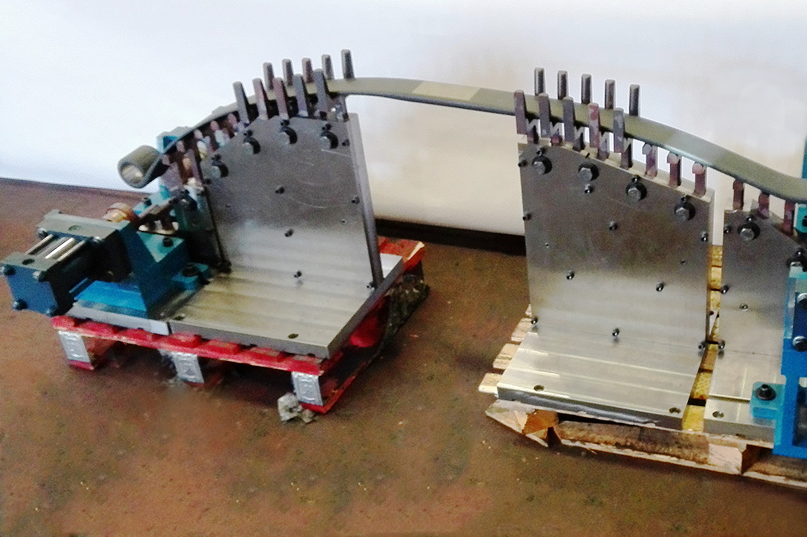
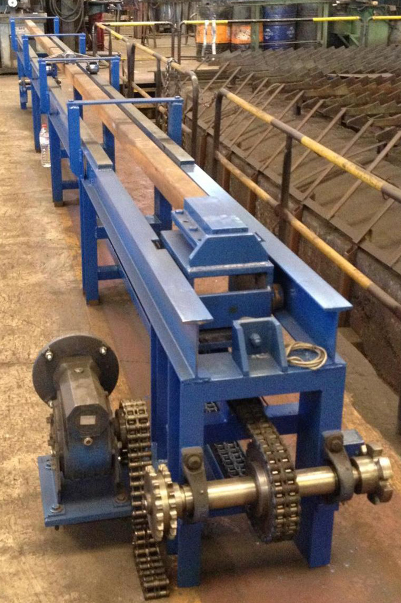
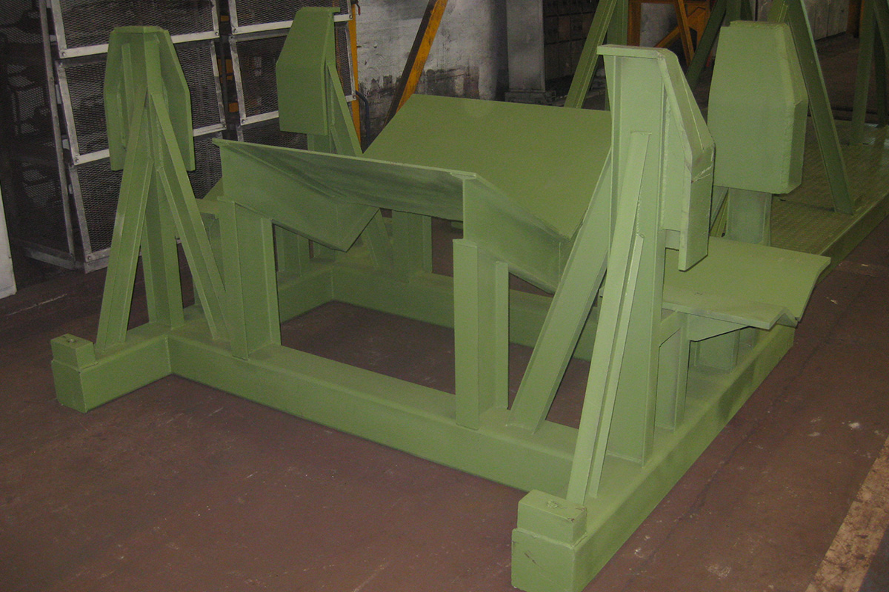
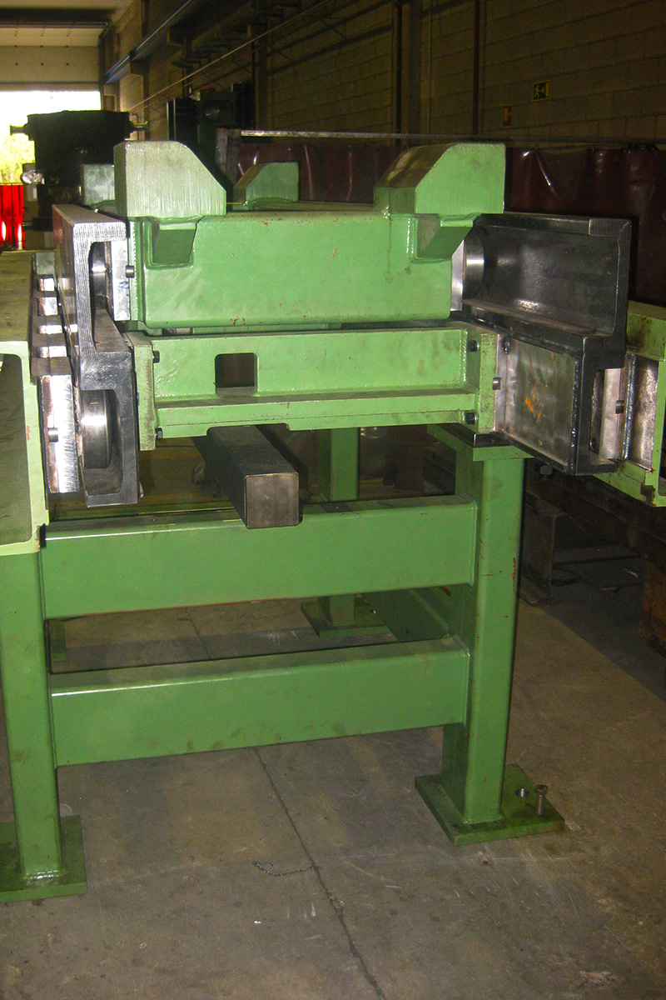
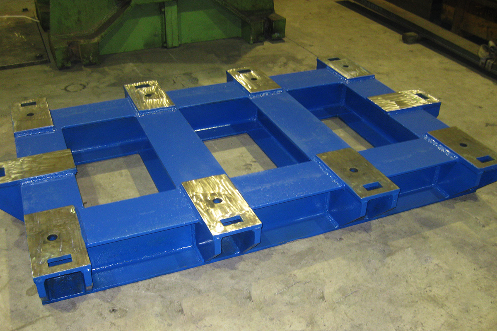
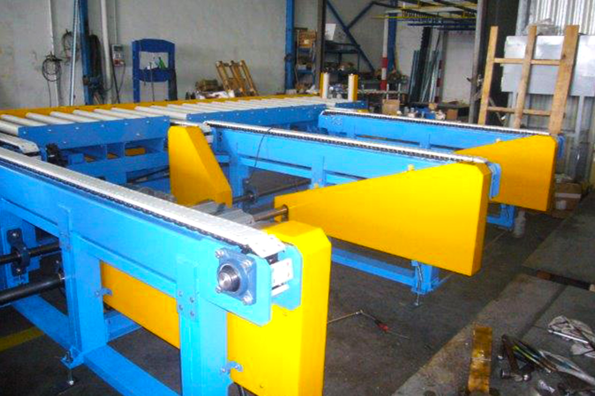